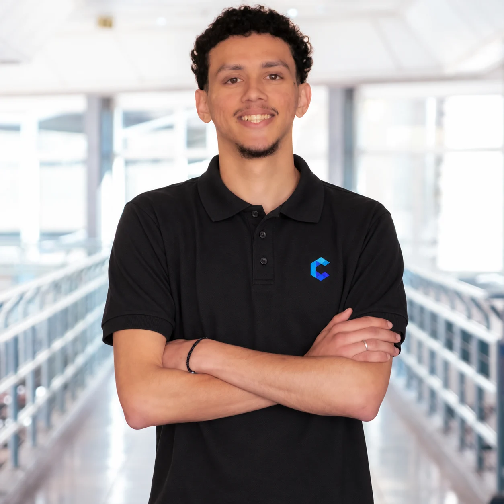
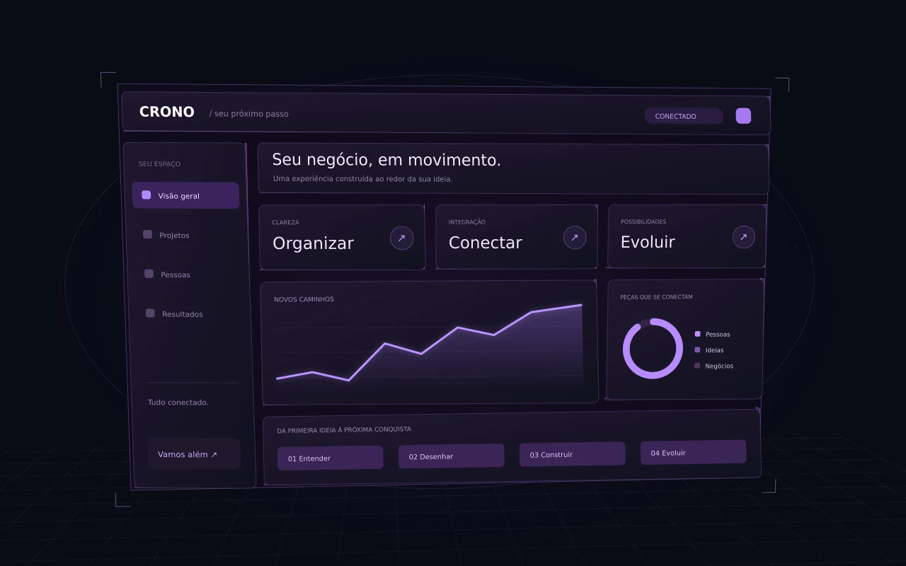
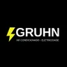

Produto CronoGestão de serviçosLiderança no desenvolvimento
DESENVOLVEDOR & FUNDADOR
ThiagoFerreira.
Transformo ideias em experiências digitais.
E desafios em novos caminhos para o seu negócio.

IDEIAS EM MOVIMENTO.EST. CRONO
TEM MAIS LOGO ABAIXO SANTA CRUZ DO SUL, RS
DA IDEIA À EXPERIÊNCIA
Pular para os projetosVeja uma solução digital se construindo: pontos se conectam e blocos formam uma interface.

Visual conceitual de uma solução digital.
Role para construir
01 / TRABALHOS SELECIONADOS
DA IDEIA PARA O MUNDO REAL.Construído para
fazer a diferença.
Projetos que liderei na Crono.
Cada desafio, uma nova possibilidade.
02 / O QUE PODEMOS CONSTRUIR
Seu desafio.
Nossa próxima criação.
Do primeiro clique à operação inteira.
Soluções pensadas para o seu negócio.
01Sites & experiências digitais
+
Uma presença digital que apresenta o valor do seu negócio. Sites institucionais e landing pages com clareza, personalidade e caminhos simples para o contato.
Sites institucionais · Landing pages · Presença digitalVamos criar seu site
02Sistemas sob medida
+
Transformo a rotina da sua empresa em uma solução digital feita para ela. Organização, gestão e informações reunidas para simplificar o dia a dia.
Sistemas web · Painéis de gestão · AutomaçãoConte seu desafio
03Comércio digital
+
Vitrines digitais que aproximam seus produtos de quem precisa deles. Lojas e catálogos online com uma jornada de compra clara e fácil de navegar.
Lojas virtuais · Catálogos · Jornada de compraVamos falar da sua loja
04Integrações & automações
+
Ferramentas que conversam entre si e processos que fluem melhor. Conecto sistemas e informações para reduzir tarefas repetitivas na sua operação.
Integrações · Fluxos automatizados · Dados conectadosVamos conectar as ideias
03 / QUEM ESTÁ POR TRÁS
PESSOAS CONSTROEM POSSIBILIDADES.THIAGO FERREIRADESENVOLVEDOR & FUNDADOR
Prazer, Thiago.
Vamos além?
Acredito no que acontece quando uma boa ideia encontra alguém disposto a construí-la.
Sou desenvolvedor e fundador da Crono Sistemas, em Santa Cruz do Sul, RS. É por lá que transformo desafios de negócios em sites, sistemas e experiências digitais.
Liderei o desenvolvimento do Crono OS, Crono Propostas e dos projetos da Gruhn. Meu trabalho começa entendendo o que precisa acontecer — e continua até a ideia ganhar forma.
MINHA EMPRESACrono Sistemas
04 / COMO ACONTECE
UMA BOA CONVERSA É O COMEÇO.Do primeiro “e se...”
ao próximo passo.
Você acompanha o caminho.
A gente constrói junto.
Entender
Conversamos sobre seu negócio, seus desafios e o que você quer alcançar.
IDEIA & DIREÇÃODesenhar
Organizamos as possibilidades em uma experiência clara e um caminho concreto.
FORMA & EXPERIÊNCIAConstruir
A ideia ganha vida com desenvolvimento e acompanhamento de cada etapa.
CRIAÇÃO & ENTREGAEvoluir
A solução acompanha seu negócio, com melhorias para os próximos desafios.
PARCERIA & CONTINUIDADE05 / CONFIANÇA CONSTRUÍDA
CLIENTES DA CRONO SISTEMASBoas parcerias.
Histórias que continuam.
Somos clientes da Crono! A empresa realiza o acompanhamento e o desenvolvimento contínuo das nossas plataformas de gestão. Indicamos com certeza!

Fernando GruhnProprietário · Gruhn ElétricaO processo foi claro e o novo site ficou rápido, organizado e fácil para nossos clientes encontrarem o que precisam.
O sistema reuniu informações que antes ficavam espalhadas e deixou a rotina da equipe muito mais simples.
Depoimentos de clientes publicados no site da Crono Sistemas ↗
BOAS IDEIAS MERECEM ACONTECER
QUAL É A SUA?Vamos criar
algo incrível?
Me conte o que você tem em mente.
O próximo passo começa com uma conversa.